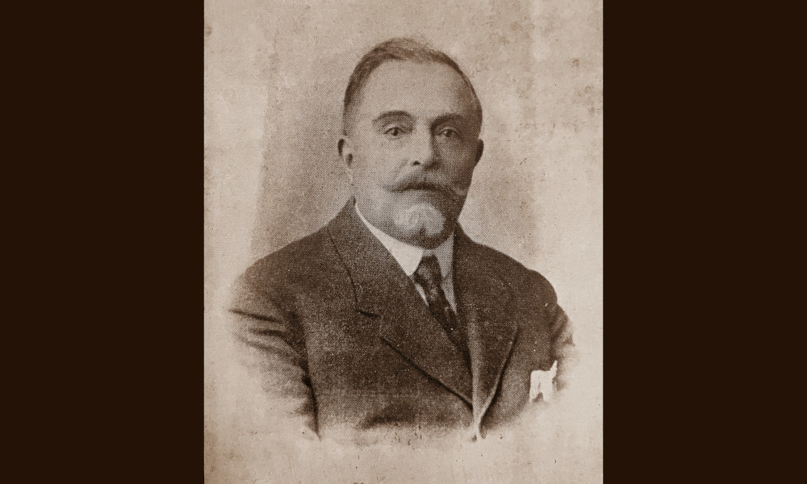

Corvisieri

Consulta le banche dati della Fondazione
Federico Zeri e ricerca fotografie, documenti,
cataloghi d'asta, fondi e notizie
sull'antiquario corrente.
Gustavo Corvisieri fu un antiquario romano titolare di una casa d’aste, la “Casa di Vendite Corvisieri & C.”. Ricordato come uno dei primi mercanti romani insieme ai Castellani, agli Jandolo e a Giacomini, si avvicinò al mercato di oggetti antichi attraverso l’interesse del padre e dello zio, appassionati cultori di antichità. Era infatti figlio di Domenico Corvisieri, che aveva un negozio di antichità in via Propaganda 26 e nipote di Costantino (1822-1898), noto paleologo e archeologo. Con i loro commerci i due avevano riportato a Roma tesori artistici di pregevole fattura: maioliche, arazzi, bronzi, quadri a fondo d'oro e codici miniati.
Gustavo aprì la sua attività nel 1891, intitolandola al padre. A partire dal 1901 nella ditta Corvisieri iniziò a lavorare Vincenzo Capobianchi (1836-1928), pittore, studioso di numismatica e di porcellane antiche, nonché mercante.
Nel 1919 Corvisieri vendette l’azienda ai dipendenti, ritirandosi nei vasti locali al piano terra di Palazzo Patrizi in via Margutta 53b e dedicandosi alla propria collezione di antichità, poi messa all’asta nel 1936, l’anno successivo alla morte.